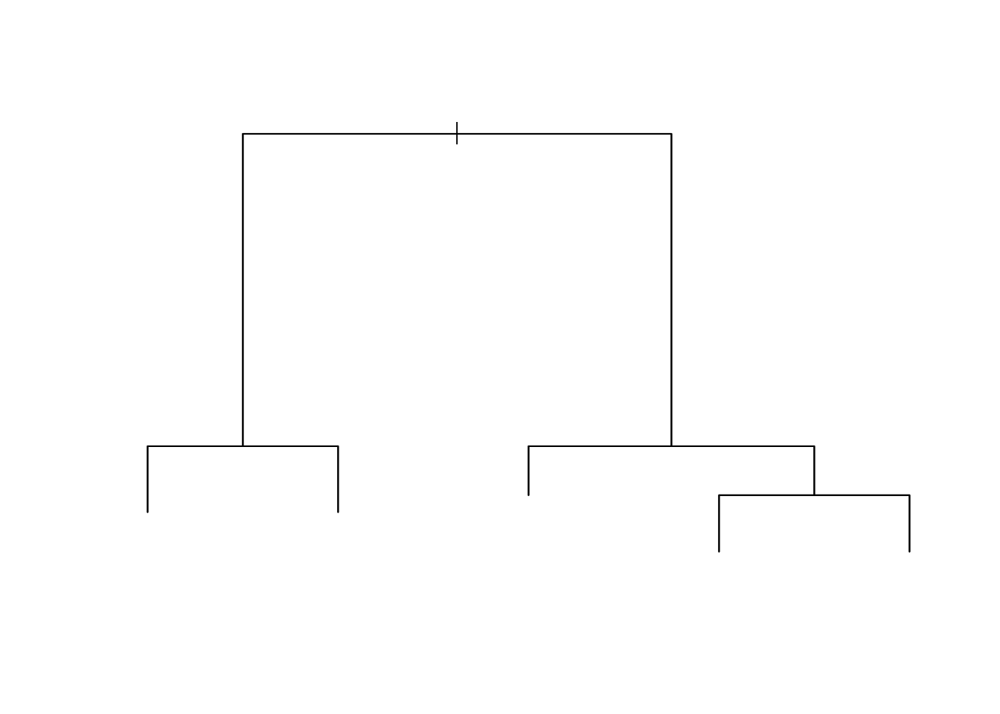

# General Packages
library(tidyverse)
# Creating validation and training set
library(caret)
# Decision Trees
#install.packages("tree")
library(tree)
# Random Forests & Bagging
#install.packages("party")
library(randomForest)7 Tree-based Methods
7.1 Readings
ISLR:
- Chapter 8: Tree-based models
7.2 Introduction
Lecturer: Ayoub Bagheri
Basic vocabulary
can applied to both, regression and classification
predictor space is stratified or segmented into a number of simple regions → in order to make a prediction for a given observation, we typically use the mean of the mode response value for the training observations in the region to which it belongs
root of the tree / root node is the starting point, it is the first decision, which is defined in a tree → the decisions or better predictors with a certain threshold are the referred as nodes in a tree (also known as leaves)
The points along the tree where the predictor space is split are referred to as internal nodes.
has a certain threshold, if the mean response value is higher than that threshold, the observations are assigned to one branch, if its lower, they are assigned to the other branch. Always only two branches (yes, no), binary decisions!
then, the subgroup, referred to as region
two kinds of trees
decision trees: a complex decision is broken down in different criteria, to advise a decision. For example buying a car is a complex decision, can be parsed into: Have you tested the car on road? How many miles has been already driven with that car? How old is the car? Is the car environment friendly? And so on.
prediction trees: Would you survive the titanic? Parse a complex decision into certain criteria?
7.3 Growing decision trees from data
Goal is to find regions, that minize the RSS.
Key question: how can we find the best split?
Recursive (binary) partitioning:
- Find the split that makes observations as similar as possible on the outcome within that split
- Which feature should I use for splitting? Is this split the best? We do that for each feature. If we found our best split, we apply it and then we asked what is now the best split for the subgroup → stratify the observations in smaller and smaller regions, so that they become as homogeneous as possible
- we divide the predictor space, the set of possible values for \(X_1, X_2, \dots, X_p\) into \(J\)j distinct and non-overlapping regions for \(R_1, R_2, \dots, R_J\). Then, for every observation that falls into the Region \(R_j\) we make the same prediction, which is simply the mean of the response values for the training observations in \(R_j\). The goal is to find boxes \(R_1, R_2, \dots, R_J\) that minimize the RSS.
- Unfortunately, it is computationally unfeasible to consider every possible partition of the feature space into J boxes. For this reason, we take a top-down, greedy approach that is known as recursive binary splitting
- In order to perform recursive binary splitting, we first select the predictor \(X_j\) and the cutpoint \(s\) such that splitting the predictor space into regions \({X|X_j < s}\) and \({X|X_j >= s}\) leads to the greatest possible reduction in RSS.
- do the first step in each resulting group over and over again.
Early stopping: Stratifying in too small groups is an overfitting:
- we can implement stop points for splitting, so if a certain threshold is reached, we stop splitting.
- so stop, when fewer than \(n_{min}\) observations in the group (typically 10)
7.3.1 Tree-building: top-down and greedy
Recursive (binary) partitioning is a top-down and greedy algorithm:
- top-down: algorithm begins at the top of the tree with all observations and then successively splits the predictor space. Each split is indicated via two new branches further down on the tree.
- greedy (gefräßig, gierig): at each step, the best split for that step is made, instead of looking ahead and picking a split that will result in the best tree in a future step. At each split we take the best split possible, we do not look, which splits overall is the best! → so greedy method
7.4 Regression trees
The outcome is continuous, is a numerical. Instead of predicting class label in each box(partition), we predict the outcome in each partition:
- mean of the training observations in the partition, to which the test observations belong
- cutploints are selected such that splitting the predictor space into the reions leads to the greatest possible reduction in residual sums of squares (RSS)
Example:
Wine quality, quality measured on a scale
Outcome is a numerical. We start with alcohol as a root node and 100 % of the observations. At a certain threshold we divide the observations into two regions, the yes branch, if alcohol is < 11 and the no one, if alcohol is >=11. Then, the mean value for the divided regions is computed. Is For the one <11, the wine quality is 5.4, where the other group has a quite higher quality with 6.1 and contains 39% of the observations. So instead of yes / no we have numbers as an outcome.
7.5 Cost complexity Pruning
Process described most likely overfits the data → poor test performance
Solution 1: build the tree until the decrease in classification error / RSS exceeds some threshold
However, a seemingly worthless split early on in the tree might be followed by a very good split
Solution 2: build a very long tree, then prune it back in order to obtain a subtree
- not efficient to consider every possible subtree
- so cost complexity pruning (simply use the idea of the lasso regression in adding a penalty): A penalty \(|T| \alpha\) where \(|T|\) is the number of final nodes and \(\alpha\) is a tuning parameter, is placed on the total number of final nodes:
- \(\alpha = 0\) → subtree equals the original (long) tree as \(\alpha\) increases, becomes more expensive to have a tree with many terminal nodes, resulting in a smaller subtree.
- use K-fold cross-validation to choose \(\alpha\)
Examples for cost complexity:
7.6 Building a tree summed up
7.7 Classification trees
The outcome is a categorical: Would you survive the titanic? Would you pass the exam? Is it a cat or a dog on that picture? Quality of a product (when in categories like good, bad and so on)
Example:
Different predictors are included: sex, pclass, age. Each predictor has a certain threshold or a certain selection of category, which acts as criteria to divide the observations in regions through the branches yes / no.
In the root node the criteria is sex= male. For all observations (100%) it is checked, if they are male or not. 64% of the observations are male, but only have a 0.17 chance to survive the titanic. So they are a No (marked in red). 36 % of the observations are women and have a 0.77 chance to survive, which is above 50 %, so they are a yes (marked in blue).
Then, a next decision level is included, the Pclass. Here, again a certain criteria is set and again, the observations are split into smaller regions. Again, the mean probability of the regions is computed, if they would survive the titanic and it is given, how many observations lay in this region.
A possible predictor can be used multiple times in a tree in using different thresholds or selecting different categories.
Key question: how can we find the best split?
Just as in the regression setting, we use recursive binary splitting to grow a classification tree. However, in the classification setting, RSS cannot be used as a criterion for making the binary splits.
Luckily, they are many different methods, with which we can explore, what is the best.
One method: Gini index or Gini impurity! Measurement, how good the split is compared to others. We do that for all subgroubs(regions) and sum up the values. The decision tree with the smallest value wins!
Criteria for ‘as similar as possible’: reduction in classification error rate such as the Gini impurity or entropy
Gini impurity or Gini index:
\[ G = \sum_{k=1}^K \hat{p}_{mk}(1-\hat{p}_{mk}) \]
where \(\hat{p}_{mk}\) represent the proportion of training observations in partitions m with the category k, e.g. split the observations in proportion with the category age, sex, pclass and compute the survival (yes/ no)
- for each split we look at the impurity of each side and the smaller the better Split can be decided by scientist or for all values of data set & but really time consuming!)
- small value: all values in the partition are either close to 0 or to 1
- Hence, Gini index is a measure of node impurity; small values indicates that a partition contain predominantly oversvations from a single class
Example:
- Here we can see, how we can split the observations with two predictors into regions, where the mean value of the regions define, if the observations in the region will survive or not:
- If the observation has a fare >= 50, the person is likely to survive and if the persion has a fare =< than 50, but is younger than 8, the person has a good chance to survive.
we can continue with splitting over and over again, producing smaller and smaller groups → we see, that at a certain point, more nodes make not sense at all, because producing all over the same outcome for subgroups, that would be predicted in the larger subgroup, too.
Attention! Splitting can only be done in not overlapping squares!
7.8 Compare trees vs. linear classifiers
- Although the decision trees can solve non-linear, complex relations, the decision trees not always better than linear classifiers.
- Because looking for decision boundaries. if we have a linear problem, decision tree fails.
- → only perform well for non-linear relationsships
- “Trees are very easy to explain and interpret”
- “Automatically detects” nonlinear relationships and interactions
- Trees can be easily displayed graphically (sometimes)
- Usually worse performance than other common statistical learning methods, because: Prone to overfitting (high variance): small change in the data can cause a large change in the final estimated tree.
Can be improved by combining many trees: Bagging and Random Forests
7.9 Bagging
Intuition behind bagging: When you fiddle (herumspielen) with the observations just a little, 1. some things vary a lot, 2. some things stay pretty much the same
Overfittung is caused by 1, but 1 happens randomly, causing predictions to go up or down hapharyardly (willkürlich, wahllos, zufällig). Therefore 1 should be canceled out by fiddling with the observations a little and averaging
Averaging: “Wisdom of the crowd”
Bagging is a form of bootstrap aggregation
- A general-purpose procedure for reducing the variance of statistical learning methods. It is very useful and often applied in the context of decision trees
- when we have multiple sets (n) of independent observations with common variance \(\sigma^2\) the variance over sets of the mean of all observations is given by \(\sigma^2 /n\) .
- hence, averaging a set of independent observations reduces variance. But, what when only training data?
We can mimic having multiple training sets by bootstrapping:
- bootstrapping create resamplesof the sample S m times with replacement and acts like if we have different samples from population
- generate B different bootrtrapped training data sets → set the number of trees
- train a decision tree on each of the \(b^th\) bootrtrapped training set to get a prediction for each observation \(x:\hat{f}^{*(b)} (x)\)
- we average all predictions to obtain, so the output is the average of all trees B \[ \hat{f_{avg}}(x)= \frac{1}{B} \sum_{b=1}^B \hat{f}^{*(b)} (x) \]
- when working with classification trees, we take the majority vote:the overall prediction is the most commonly occurring class among the B predictions.
- do not need to prune! grow large trees in each bootstrapped sample and variance is decreased by averaging
- three samples with 5 observations, selected with replacement, so randomly sampled in different features.
- Result: three random samples, three decision trees for the each random sample
- test with a new observation all three trees: for the predicted input we have 3 different predicted values, we take the average of it
- same procedure for classification → the majority wins!
7.10 Random forest
- Bagging works because averaging independent observations reduces the variance to the tune of n.
- in bootstrapping, samples taken are independent.
- but the predictions from the tree grown on the bootstrapped samples are not independent.
- share the same features and can therefore create similarly overfitting in decision rules.
- “Wisdom of crowds who peek at each other´s answers”
- each sample has the same predictors and features! So the samples are independently but the features are not! &rarr features correlate, “tree correlation” (Breiman 2001)
- instead: use a subset of features to decorrelate → random forest try to remove this coorrelation by feature sampling: randomly sampling both rows (bootstrapping) and columns.
- As in bagging, we build a number forest of decision trees on bootstrapped training samples. But when building these decision trees, each time a split in a tree is considered, a random sample of m predictors is chosen as split candidates from the full set of p predictors. The split is allowed to use only one of those m predictors.
- typically \(m = /sqrt{p}\) so number of predictors considered at each split approximately equal to total numbers of predictors
- Using a small value of m in building a random forest will typically be helpful when we have a large number of correlated predictors
Decorrelation obtained by:
- When building a tree, instread of using all variables when making a split, take a random selection of m predictors as candidates to base the split on
- at each split, take a fresh selection of m predictors m is typically set to \(\sqrt{p}\)
- Similar to bagging, the collection of trees (=forest) is build on bootstrapped training samples
Hence, bagging is a special case of a random forest m=p
- bootstrap again. not every feature is in every sample
- result: three decision trees with different nodes on each decision level.
7.11 Other methods
- In boosting we only use the original data, and do not draw any random samples. The trees are grown successively, using a “slow” learning approach: each new tree is fit to the signal that is left over from the earlier trees, and shrunken down before it is used.
- In Bayesian Additive REgreesion Trees (BART) , we once again only make use of the original data, and we grow the trees successively. However, each tree is perturbed in order to avoid local minima and achieve a more thorough exploration of the model space.
7.12 “Out-of-bag” error estimation
When we do bagging and random forest, there is a very simple way to estimate the test error without the need to perform cross/validation or the validation set approach
- in both methods, we take multiple bootstrapped samples of the training data. On average, each tree uses about 2/3 of the observations
- ramaing 1/3 left observations are referred to as the out-of-bag (OOB) observations. Left out for test
- If we want to calculate the error for a particular observation, we can predict the response using each of the trees in which it was OOB. This will give B/3 predictions for this observation, which we average. When we do this for all observations we get the OOB error.
- It can be shown that with B sufficiently large, OOB error is virtually equivalent to leave-one-out cross-validation error. The OOB approach for estimating the test error is particularly convenient when performing bagging on large data sets for which cross-validation would be computationally onerous.
And lastly, the OOB score is computed as the number of correctly predicted rows from the out of bag sample. out-of-bag error is an estimate of the error rate (which is 1 - accuracy) that this training approach has for new data from the same distribution. This estimate is based on the predictions that you get for each data point by using only averaging those trees, for which the record was not in the training data.
If you have a low number of trees the OOB error might be not a good estimate of the error rate that training an algorithm like this has on new data, because each tree in RF tends to be underfit and only once you combine enough trees the RF gets better (so if there’s only a small number of trees per record, it may underestimate performance). On the other hand, once you have a huge number of trees it becomes a pretty good estimate like you get from a train-validation split with a lot of data (or cross-validation).
7.13 Variance importance measure (MDI)
In both bagging and random forest, it can be difficult to interpret the resulting model
- When large number of trees, no longer possible to represent graphically the resulting statistical learning procedure using a single tree
- how to find out which predictor(s) are most important?
Although the collection of bagged trees is much more difficult to interpret than a single tree, one can obtain an overall summary of the importance of each predictor using the RSS (for bagging regression trees) or the Gini index (for bagging classification trees).
→ variable importance measures: A large value indicates an important predictor. Similarly, in the context of bagging classification trees, we can add up the total amount that the Gini index (8.6) is decreased by splits over a given predictor, averaged over all B trees
- unblackboxing the black box models!
- Because when we have hundred trees, it is not easy to follow anymore.
It´s not traceable, which variables are important and how they weight in the model overall.
How “important is variable \(x_j\) to the prediction?
- recall that trees are grown by minimizing “impurity” (e.g. Gini, RSS)
- idea: record the total amount that impurity is decreased due to splits over \(x_j\), averaged over all B trees
- Advantage: obtained for free with estimation. We can do that easily, because we already have a tree
- Disadavantage: imporance of features used to overfit inflated, importannce of numerical features inflated
7.13.1 Permutation-based feature importance
- idea: randomly shuffle one column and observe how much worse it makes the model
- advantage: does not have the problems of MDI
- disadvantage: can take a while, results vary and ignores correlations among predictors (perfectly correlated features are all “unimportant”)
How to interpret?
![]figures/8.imp.png){width=“300”}
The Mean Decrease Accuracy plot expresses how much accuracy the model losses by excluding each variable. The more the accuracy suffers, the more important the variable is for the successful classification. The variables are presented from descending importance. The mean decrease in Gini coefficient is a measure of how each variable contributes to the homogeneity of the nodes and leaves in the resulting random forest. The higher the value of mean decrease accuracy or mean decrease Gini score, the higher the importance of the variable in the model.
7.14 in R
library(tree) #decision tree
your_tree_model <-tree(bin_qual ~ fixed_acidity + residual_sugar + pH + sulphates, data=wine_train)
Now, let's evaluate whether pruning this tree may lead to an improved tree. For this, you use the function `cv.tree()`. This runs the tree repeatedly, at each step reducing the number of terminal nodes to determine how this impacts the deviation of the data. You will need to use the argument `FUN = prune.misclass` to indicate we are looking at a classification tree.
library(randomForest) #random Forest
#bagging= max number of predictors are included, randomForest not alle predictors, only subset is included
r_bag <- randomForest(formula = bin_qual ~ fixed_acidity + citric_acid + residual_sugar + pH + total_sulfur_dioxide + density + alcohol, # Tree Formula
data = wine_train, # Data Set
mtry = 7, # Number of predictors to be considered for each split
importance = TRUE) # The Variable importance estimator
library(party) # importance measurement
varimp(model, conditional = TRUE) # shows the important predictors in a modelIn this practical we will cover an introduction to building tree-based models, for the purposes of regression and classification. This will build upon, and review the topics covered in the lecture, in addition to Chapter 8: Tree Based Models in Introduction to Statistical Learning.
You can download the student zip including all needed files for practical 8 here. For this practical, you will need the following packages:
Throughout this practical, we will be using the Red Wine Quality dataset from Kaggle, introduced within the Moving Beyond Linearity Lecture (Week 6).
wine_dat <- read.csv("data/winequality-red.csv")7.14.1 Decision Trees
When examining classification or regression based problems, it is possible to use decision trees to address them. As a whole, regression and classification trees, follow a similar construction procedure, however their main difference exists in their usage; with regression trees being used for continuous outcome variables, and classification trees being used for categorical outcome variables. The other differences exist at the construction level, with regression trees being based around the average of the numerical target variable, with classification tree being based around the majority vote.
Knowing the difference between when to use a classification or regression tree is important, as it can influence the way you process and produce your decision trees.
- Using this knowledge about regression and classification trees, determine whether each of these research questions would be best addressed with a regression or classification tree.
Hint: Check the data sets in the Help panel in the Rstudio GUI.
- 1a. Using the
Hittersdata set; You would like to predict the Number of hits in 1986 (HitsVariable), based upon the number of number of years in the major leagues (YearsVariable) and the number of times at bat in 1986 (AtBatVariable).- Regression, because outcome is numeric variable
- 1b. Using the
Hittersdata set; You would like to predict the players 1987 annual salary on opening day (Salaryvariable), based upon the number of hits in 1986 (Hitsvariable), the players league (Leaguevariable) and the number of number of years in the major leagues (YearsVariable).- Regression, because outcome is numeric variable
- 1c. Using the
Diamondsdata set; You would like to predict the quality of the diamonds cut (cutvariable) based upon the price in US dollars (pricevariable) and the weight of the diamond (caratvariable).- classification, because outcome is categorical
- 1d. Using the
Diamondsdata set; You would like to predict the price of the diamond in US dollars (pricevariable), based upon the diamonds colour (colorvariable) and weight (caratvariable).- Regression
- 1e. Using the
Diamondsdata set; You would like to predict how clear a diamond would be (clarityvariable), based upon its price in US dollars (pricevariable) and cut (cutvariable).- classification
- 1f. Using the
Titanicdata set; You would like to predict the survival of a specific passenger (survivedvariable), based upon their class (Classvariable), sex (Sexvariable) and age (Agevariable).- Classification
7.14.2 Classification trees
Before we start growing our own decision trees, let us first explore the data set we will be using for these exercises. This as previously mentioned is a data set from Kaggle, looking at the Quality of Red Wine from Portugal. Using the functions str() and summary(), explore this data set (wine_dat).
As you can see this contains over 1500 observations across 12 variables, of which 11 can be considered continuous, and 1 can be considered categorical (quality).
Now we have explored the data this practical will be structured around, let us focus on how to grow classification trees. The research question we will investigate is whether we can predict wine quality, classified as Good (Quality > 5) or Poor (Quality <= 5), by the Fixed Acidity (fixed_acidity), amount of residual sugars (residual_sugar), pH (pH) and amount of sulphates (sulphates).
Before we grow this tree, we must create an additional variable, which indicates whether a wine is of Good or Poor quality, based upon the quality of the data.
summary(wine_dat) fixed_acidity volatile_acidity citric_acid residual_sugar
Min. : 4.60 Min. :0.1200 Min. :0.000 Min. : 0.900
1st Qu.: 7.10 1st Qu.:0.3900 1st Qu.:0.090 1st Qu.: 1.900
Median : 7.90 Median :0.5200 Median :0.260 Median : 2.200
Mean : 8.32 Mean :0.5278 Mean :0.271 Mean : 2.539
3rd Qu.: 9.20 3rd Qu.:0.6400 3rd Qu.:0.420 3rd Qu.: 2.600
Max. :15.90 Max. :1.5800 Max. :1.000 Max. :15.500
chlorides free_sulfur_dioxide total_sulfur_dioxide density
Min. :0.01200 Min. : 1.00 Min. : 6.00 Min. :0.9901
1st Qu.:0.07000 1st Qu.: 7.00 1st Qu.: 22.00 1st Qu.:0.9956
Median :0.07900 Median :14.00 Median : 38.00 Median :0.9968
Mean :0.08747 Mean :15.87 Mean : 46.47 Mean :0.9967
3rd Qu.:0.09000 3rd Qu.:21.00 3rd Qu.: 62.00 3rd Qu.:0.9978
Max. :0.61100 Max. :72.00 Max. :289.00 Max. :1.0037
pH sulphates alcohol quality
Min. :2.740 Min. :0.3300 Min. : 8.40 Min. :3.000
1st Qu.:3.210 1st Qu.:0.5500 1st Qu.: 9.50 1st Qu.:5.000
Median :3.310 Median :0.6200 Median :10.20 Median :6.000
Mean :3.311 Mean :0.6581 Mean :10.42 Mean :5.636
3rd Qu.:3.400 3rd Qu.:0.7300 3rd Qu.:11.10 3rd Qu.:6.000
Max. :4.010 Max. :2.0000 Max. :14.90 Max. :8.000 str(wine_dat)'data.frame': 1599 obs. of 12 variables:
$ fixed_acidity : num 7.4 7.8 7.8 11.2 7.4 7.4 7.9 7.3 7.8 7.5 ...
$ volatile_acidity : num 0.7 0.88 0.76 0.28 0.7 0.66 0.6 0.65 0.58 0.5 ...
$ citric_acid : num 0 0 0.04 0.56 0 0 0.06 0 0.02 0.36 ...
$ residual_sugar : num 1.9 2.6 2.3 1.9 1.9 1.8 1.6 1.2 2 6.1 ...
$ chlorides : num 0.076 0.098 0.092 0.075 0.076 0.075 0.069 0.065 0.073 0.071 ...
$ free_sulfur_dioxide : num 11 25 15 17 11 13 15 15 9 17 ...
$ total_sulfur_dioxide: num 34 67 54 60 34 40 59 21 18 102 ...
$ density : num 0.998 0.997 0.997 0.998 0.998 ...
$ pH : num 3.51 3.2 3.26 3.16 3.51 3.51 3.3 3.39 3.36 3.35 ...
$ sulphates : num 0.56 0.68 0.65 0.58 0.56 0.56 0.46 0.47 0.57 0.8 ...
$ alcohol : num 9.4 9.8 9.8 9.8 9.4 9.4 9.4 10 9.5 10.5 ...
$ quality : int 5 5 5 6 5 5 5 7 7 5 ...- Using the code below, create a new variable
bin_qual(short for binary quality) as part of thewine_datdata set.
wine_dat$bin_qual <- ifelse(wine_dat$quality <= "5", "Poor", "Good")
wine_dat$bin_qual <- as.factor(wine_dat$bin_qual)Next, we will split the data set into a training set and a validation set (for this practical, we are not using a test set). As previously discussed in other practicals these are incredibly important as these are what we will be using to develop (or train) our model before confirming them. As a general rule of thumb for machine learning, you should use a 80/20 split, however in reality use a split you are most comfortable with!
- Use the code given below to set a seed of 1003 (for reproducibility) and construct a training and validation set.
set.seed(1003)
train_index <- createDataPartition(wine_dat$bin_qual, p = .8,
list = FALSE,
times = 1)
wine_train <- wine_dat[train_index,]
wine_valid <- wine_dat[-train_index,]This should now give you the split data sets of train & validate, containing 1278 and 321 observations respectively.
7.14.3 Building Classification Trees
Now that you have split the quality of the wine into this dichotomous pair and created a training and validation set, you can grow a classification tree. In order to build up a classification tree, we will be using the function tree() from the tree package, it should be noted although there are multiple different methods of creating decision trees, we will focus on the tree() function. As such this requires the following minimum components:
- formula
- data
- subset
When growing a tree using this function, it works in a similar way to the lm() function, regarding the input of a formula, specific of the data and additionally how the data should be sub-setted.
- Using the
tree()function, grow a tree to investigate whether we can predict wine quality classified as Good (Quality > 5) or Poor (Quality <= 5), byfixed_acidity,residual_sugar,pHandsulphates.
your_tree_model <-tree(bin_qual ~ fixed_acidity + residual_sugar + pH + sulphates, data=wine_train)
?treeHelp on topic 'tree' was found in the following packages:
Package Library
xfun /home/runner/work/_temp/renv/cache/v5/R-4.3/x86_64-pc-linux-gnu/xfun/0.49/8687398773806cfff9401a2feca96298
tree /home/runner/work/_temp/renv/cache/v5/R-4.3/x86_64-pc-linux-gnu/tree/1.0-44/62b3f891c7f9be249e426bfc6cdb2eac
cli /home/runner/work/_temp/renv/cache/v5/R-4.3/x86_64-pc-linux-gnu/cli/3.6.3/b21916dd77a27642b447374a5d30ecf3
Using the first match ...7.14.4 Plotting Classification Trees
When plotting decision trees, most commonly this uses the base R’s plot() function, rather than any ggplot() function. As such to plot a regression tree, you simply need to run the function plot() including the model as its main argument.
- Using the
plot()function, plot the outcome object of your regression tree.
plot(your_tree_model)
As you can see when you plot this, this only plots the empty decision tree, as such you will need to add a text() function separately.
- Repeat plotting the outcome object of your regression tree, with in the next line adding the
text()function, with as inputyour_tree_modelandpretty = 0.
plot(your_tree_model)
text(your_tree_model, pretty=0)This now adds the text to the to the decision tree allowing it to be specified visually.
Although plotting the regression tree can be useful for displaying how a topic is split, it only goes some way to answering the research question presented. As such, additional steps are required to ensure that the tree is efficiently fitted.
Firstly, you can explore the layout of the current model using the summary() function. This displays the predictors used within the tree; the number of terminal nodes; the residual mean deviance and the distribution of the residuals.
- Using the
summary()function, examine the current decision tree, and report the number of terminal nodes and the residual mean deviance.
summary(your_tree_model)
Classification tree:
tree(formula = bin_qual ~ fixed_acidity + residual_sugar + pH +
sulphates, data = wine_train)
Variables actually used in tree construction:
[1] "sulphates"
Number of terminal nodes: 5
Residual mean deviance: 1.235 = 1575 / 1275
Misclassification error rate: 0.3336 = 427 / 1280 7.14.5 Assessing accuracy and pruning of classification trees
During the homework part, you have fitted a classification tree on the Red Wine Quality dataset. In this first part during the lab, we will continue with your fitted tree, and inspect its overall accuracy and improvement through pruning. To examine the overall accuracy of the model, you should determine the prediction accuracy both for the training and the validation set. Using the predicted and observed outcome values, we can construct a confusion matrix, similar to what we’ve done in week 5 on Classification methods.
So let us build a confusion matrix for the training subset. To begin, once more you need to calculate the predicted value under the model. However, now you need to specify that you want to use type = "class"; before forming a table between the predicted values and the actual values. As shown below
# Create the predictions
yhat_wine_train <- predict(your_tree_model, newdata = wine_train, type = "class")
# Obtain the observed outcomes of the training data
qual_train <- wine_train[, "bin_qual"]
# Create the cross table:
tab_wine_train <- table(yhat_wine_train, qual_train)
tab_wine_train qual_train
yhat_wine_train Good Poor
Good 511 254
Poor 173 342 sum(tab_wine_train)[1] 1280The obtained confusion matrix indicates the frequency of a wine predicted as good while it is actually good or poor, and the frequency of wine predicted as poor while actually being good or poor. The frequencies in the confusion matrix are used to determine the accuracy through the formula:
Accuracy = (Total Correct-True Predict [1,1] + Total Correct-False Predictions [2,2]) / total number of items
# Calculate Accuracy accordingly:
accuracy_wine_train <- (tab_wine_train[1] + tab_wine_train[4]) / 1280
accuracy_wine_train[1] 0.6664062From this, you can see that this model has an accuracy of around 67% meaning that 67% of the time, it is able to correctly predict from the predictors whether a wine will be of good or poor quality.
- Using this format, create a confusion matrix for the validation subset, and calculate the associated accuracy.
Hint: you can obtain the predicted outcomes for the validation set using predict(your_tree_model, newdata = wine_valid, type = "class") and you can extract the observed outcomes of the validation data using wine_valid[, "bin_qual"].
# predict
yhat_wine_valid <- predict(your_tree_model, newdata = wine_valid, type = "class")
# obtain the observed outcomes to the validation set
qual_valid <-wine_valid[, "bin_qual"]
#Create cross table
tab_wine_valid <- table(yhat_wine_valid, qual_valid)
tab_wine_valid qual_valid
yhat_wine_valid Good Poor
Good 126 62
Poor 45 86sum(tab_wine_valid)[1] 319# accuracy
accuracy_wine_valid <- (tab_wine_valid[1] + tab_wine_valid[4]) / 319
accuracy_wine_valid[1] 0.6645768On the validation data set it performs slightly less well.
Now, let’s evaluate whether pruning this tree may lead to an improved tree. For this, you use the function cv.tree(). This runs the tree repeatedly, at each step reducing the number of terminal nodes to determine how this impacts the deviation of the data. You will need to use the argument FUN = prune.misclass to indicate we are looking at a classification tree.
- Run the model through the
cv.tree()function and examine the outcome using theplot()function using the code below.
# Determine the cv.tree
cv_quality <- cv.tree(your_tree_model, FUN=prune.misclass)
?cv.tree
# Plot the size vs dev
plot(cv_quality$size, cv_quality$dev, type = 'b')When you have run this code, you should observe a graph, which plots the size (the amount of nodes) against the dev (cross-validation error rate). This indicates how this error rate changes depending on how many nodes are used. In this case you should be able to observe a steep drop in dev between 1 and 2, before it slowing down from 2 to 5 (the maximum number of nodes used). If you would further like to inspect this, you could compare the accuracy (obtained from the confusion matrices) between these different models, to see which is best fitting. In order to prune the decision tree, you simply use the function prune.misclass(), providing both the model and best = number of nodes as your arguments.
?prune.misclass
model_tree2 <- prune.misclass(your_tree_model, best= 2)
plot(model_tree2);text(model_tree2)Note that in the same way as growing classification trees, you can use the function tree() to grow regression trees. Regarding the input of the function tree() nothing has to be changed: the function detects whether the outcome variable is categorical as seen in the above example, applying classification trees, or continuous, applying regression trees. Differences arise at evaluating the decision tree (inspecting the confusion matrix and accuracy for classification trees or inspecting the MSE for regression trees) and at pruning. To prune a classification tree, you use the function prune.mislcass(), while for regression trees the function prune.tree() is used.
7.14.6 Bagging and Random Forests
When examining the techniques of Bagging and Random Forests, it is important to remember that Bagging is simply a specialized case of Random Forests where the number of predictors randomly sampled as candidates at each split is equal to the number of predictors available, and the number of considered splits is equal to the number of predictors.
So for example, if you were looking to predict the quality of wine (as we have done during the classification tree section), based upon the predictors fixed acidity (fixed_acidity), citric acid (citric_acid), residual sugars (residual_sugar), pH (pH), total sulfur dioxide content (total_sulfar_dioxide), density (density) and alcohol (alcohol) content. If we were to undergo the bagging process we would limit the number of splits within the analysis to 7, whereas within random forest it could be any number of values you choose.
As such, the process of doing Bagging or Random Forests is similar, and both will be covered. When using these methods we get an additional measure for model accuracy in addition to the MSE: the out of bag (OOB) estimator. Also, we can use the variable importance measure to inspect which predictors in our model contribute most to accurately predicting our outcome.
Note that we will focus on a classification example, while the ISLR textbook focuses on a regression tree example.
7.14.7 Bagging
Both Bagging and Random Forest are based around the function randomForest() from the randomForest package. The function requires the following components:
randomForest(formula = ???, # Tree Formula
data = ???, # Data Set
subset = ???, # How the data set should be subsetted
mtry = ???, # Number of predictors to be considered for each split
importance = TRUE, # The Variable importance estimator
ntree = ???) # The number of trees within the random forestIn the case of bagging, the argument mtry should be set to the quantity of the predictors used within the model.
- Create a bagging model for the research question: can we predict quality of wine
bin_qual, byfixed_acidity,citric_acid,residual_sugar,pH,total_sulfur_dioxide,densityandalcoholand inspect the output. Omitntreefrom the functions input for now.
r_bag <- randomForest(formula = bin_qual ~ fixed_acidity + citric_acid + residual_sugar + pH + total_sulfur_dioxide + density + alcohol, # Tree Formula
data = wine_train, # Data Set
mtry = 7, # Number of predictors to be considered for each split
importance = TRUE) # The Variable importance estimator How do we interpret the output of this classification example? From this output, you can observe several different components. Firstly, you should be able to observe that it recognizes that this is a Classification forest, with 500 trees (the default setting for number of trees) and 7 variables tried at each split. In addition, the OOB estimate is provided in the output as well as a classification confusion matrix.
Let us examine the the accuracy level of our initial model, and compare it to the accuracy of models with a varying number of trees used.
- Calculate the accuracy of the bagged forest you just fitted
acc_r_bag <- (r_bag$confusion[1,1] + (r_bag$confusion[2,2]) / 1280)Now let’s have a look at the Out of Bag (OOB) estimator of error rate. The OOB estimator of the error rate is provided automatically with the latest version of randomForest(), and can be used as a valid estimator of the test error of the model. In the OOB estimator of the error rate, the left out data at each bootstrapped sample (hence, Out of Bag) is used as the validation set. That is, the response for each observation is predicted using each of the trees in which that observation was OOB. This score, like other indicates of accuracy deviation, you will want as low as possible, since it indicates the error rate.
- Inspect the OOB scores of the bagged forest you fitted.
#you can read that of the model
#500 Trees = 22.46%- Fit two additional models, in which you set the number of trees used to 100 and 10000, and inspect the OOB scores. Which has the highest and lowest OOB estimate?
#specifying the number of trees
r_bag_100 <- randomForest(formula = bin_qual ~ fixed_acidity + citric_acid + residual_sugar + pH + total_sulfur_dioxide + density + alcohol, # Tree Formula
data = wine_train, # Data Set
mtry = 7, # Number of predictors to be considered for each split
importance = TRUE,
ntree = 100) # The Variable importance estimator
#specifying the number of trees
r_bag_10000 <- randomForest(formula = bin_qual ~ fixed_acidity + citric_acid + residual_sugar + pH + total_sulfur_dioxide + density + alcohol, # Tree Formula
data = wine_train, # Data Set
mtry = 7, # Number of predictors to be considered for each split
importance = TRUE,
ntree = 10000) # The Variable importance estimator
#read it again from the output!
plot(r_bag)7.14.8 Random Forests
The main difference between Bagging and Random Forests is that the number of predictors randomly sampled as candidates at each split is not equal to the number of predictors available. In this case, typically (by default from the randomForest() function), they determine mtry to be 1/3 the number of available predictors for regression trees and the square root of the number of available predictors for classification trees.
- Using the
randomForest()function, construct a random forest model usingmtry = 3andntree = 500.
r_forest <- randomForest(formula = bin_qual ~ fixed_acidity + citric_acid + residual_sugar + pH + total_sulfur_dioxide + density + alcohol, # Tree Formula
data = wine_train, # Data Set
mtry = 3, # Number of predictors to be considered for each split
importance = TRUE,
ntree = 500) # The Variable importance estimator - Inspect fitted random forest model and the corresponding the OOB estimate of the random forest model and compare to the OOB estimate of the bagged forest model with
ntree = 500.
# 21.33 %The OOB estimate is really close to the bagging model. Randomforest prevents overfitting, but because we do not have a lot of predictors here, it is not the case here.
7.14.9 Variable importance
The final (optional) part of this practical will look into how to actually interpret Random Forests, using the Variable Importance Measure. As you have probably worked out from section so far, physically representing these forests is incredibly difficult and harder to interpret them, in comparison to solo trees. As such, although creating random forests improves the prediction accuracy of a model, this is at the expense of interpretability. Therefore, to understand the role of different predictors within the forests as a whole it is important to examine the measure of Variable Importance.
Overall, when looking at Regression Trees, this Variable Importance measure is calculated using the residual sum of squares (RSS) and via the Gini Index for classification trees. Conveniently, the correct version will be determined by the randomForest() function, as it can recognize whether you are creating a regression or classification tree forest.
In order to call this measure, we simply need to call the model into the function importance(). Within our case (looking at a classification forest) this will produce four columns, the binary outcome (Good/Poor) in addition to the Mean Decrease in Accuracy and the Mean Decrease in Gini Index. This is by contrast to those which you will find when examining Regression trees, examples of which can be found in ISLR Section 8.3.3.
In order to best interpret these findings, it is possible to plot, how important each predictor is using the function varImpPlot(). This will produce a sorted plot which will show the most to least important variables.
- Using your random forest model, examine the importance of the predictors using
importance()and usevarImpPlot()to plot the result. Which predictor is most important to predict the quality of Wine?
#table
forest_imp <- importance(r_forest)
#plot
varImpPlot(r_forest)This is a fundamental outcome of the random forest and it shows, for each variable, how important it is in classifying the data. The Mean Decrease Accuracy plot expresses how much accuracy the model losses by excluding each variable. The more the accuracy suffers, the more important the variable is for the successful classification. The variables are presented from descending importance. The mean decrease in Gini coefficient is a measure of how each variable contributes to the homogeneity of the nodes and leaves in the resulting random forest. The higher the value of mean decrease accuracy or mean decrease Gini score, the higher the importance of the variable in the model.
GINI: GINI importance measures the average gain of purity by splits of a given variable. If the variable is useful, it tends to split mixed labeled nodes into pure single class nodes. Splitting by a permuted variables tend neither to increase nor decrease node purities. Permuting a useful variable, tend to give relatively large decrease in mean gini-gain. GINI importance is closely related to the local decision function, that random forest uses to select the best available split. Therefore, it does not take much extra time to compute. On the other hand, mean gini-gain in local splits, is not necessarily what is most useful to measure, in contrary to change of overall model performance. Gini importance is overall inferior to (permutation based) variable importance as it is relatively more biased, more unstable and tend to answer a more indirect question.
E. g. alcohol is really relevant. Gini checks, how much the homogenity in nodes decreases, if a certain predictor is removed. The higher the the homogenity effect of one predictor is, the higher is the mean decrease in Gini.
7.15 Conclusions
- Decision trees are simple and useful for interpretation
- however, prone to overfitting. Solutions: pruning, bagging and random forests
- Bagging: fit multiple trees to bootstrapped samples of the data, combine to yield a single consensus prediction
- Random Forest: fit trees to bootstrapped samples from the data AND sample predictors. Combine all trees to yield a consensus prediction
- When using bagging and random forests
- We can approximate the test error using the Out of Bag (OOB) estimate of the error
- Which predictor is most influential on the outcome can be inferred from variable importance measures
- Random forests often show top-tier performance out of the box, but the resulting model is difficult to interpret